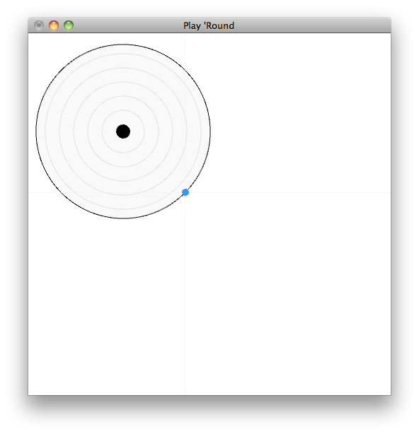
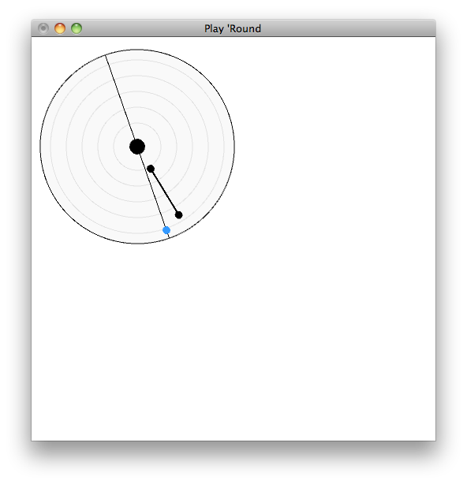
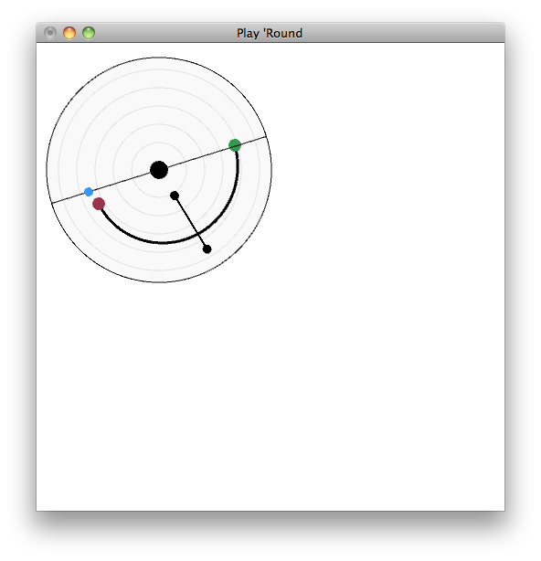
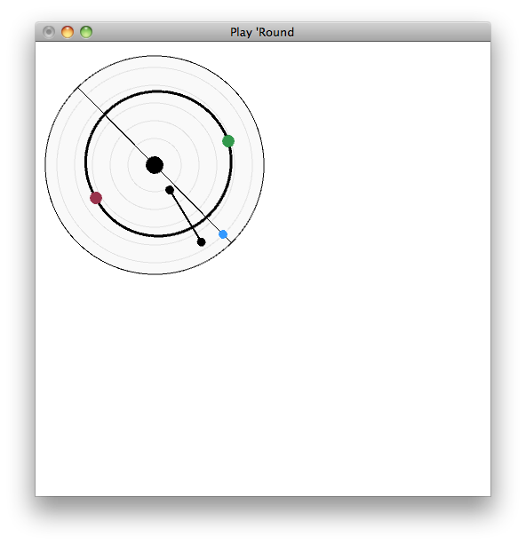
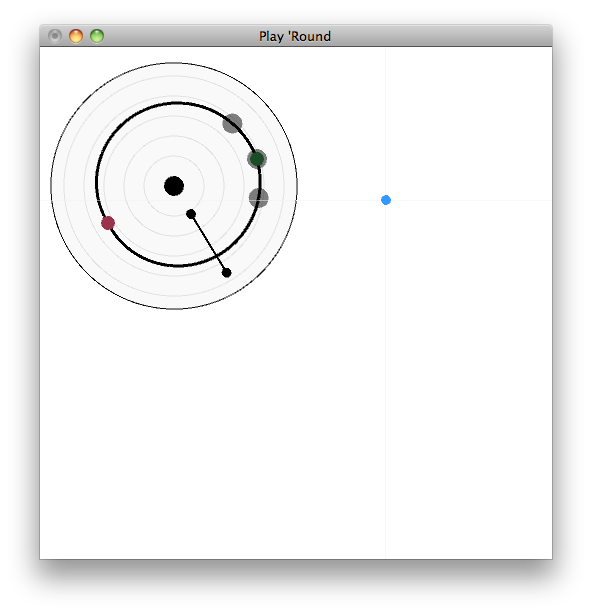
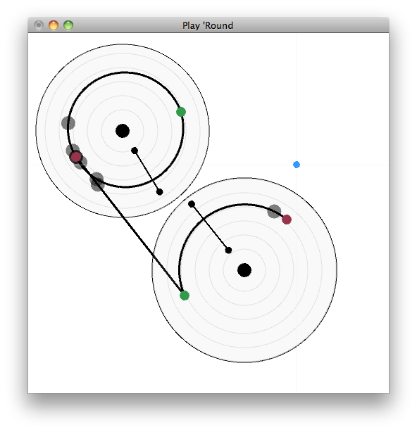
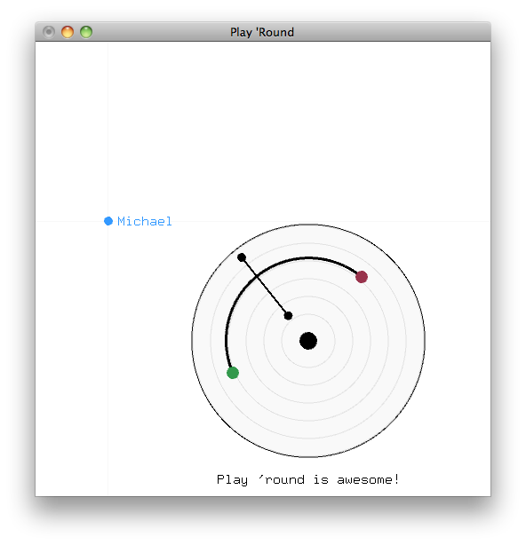

Basics
You'll want to build it. Try this:(um...works best on a Mac w/ coder stuff installed)
$ make
You'll want to run it. Try this:
$ ./playround localhost 20202
After starting, you'll see a canvas. You can draw stuff on it.


You'll want to start with a round pad. Click & drag on any blank part of the canvas. Pads are the stage on which magical things happen.
Now that you have a round pad try dragging around inside of it. You'll create one of two things: a string, or a track.
Strings make sound when plucked (duh). (By "plucked" here we really mean "moused over".) You'll get one when you draw a radial line. Long strings make low sounds, short strings make high sounds. You'll hear a string's pitch as you're drawing it. You can use your cursor to pluck strings whenever you want.


Tracks are directional paths that let you bend time to your will. They always go clockwise. Try drawing a track that goes through a string. Then, click on the beginning of the track (green dot). You'll see a plucker happily moving along the track. When the plucker hits the string, it does what you expect. Sweet!
Connect tracks by starting or ending your dragging on an existing track's end points. Pluckers jump between connected tracks. If tracks fork your pluckers will multiply (be careful!). Try creating a loop...


The last piece of the puzzle is connections between pads. Draw another pad, then draw a track on it. Then drag a track from an end point of one pad's track to an end point of another pad's track. You'll get a linear track, which pluckers will travel along just as happily as they do along the curved ones.
Deleting
Oh no, you've drawn something that's a terrible mistake! What to do?! Well, you can delete it. Just hover your mouse on the thing you want to delete (for pads, hover on the center dot) and hit the delete/back-space key. All gone!
Collaborate
Sharing is caring. We know you care, and we care too, so we want you to be able to share.
Let's talk networking; specifically, the peer-to-peer kind. With Play 'Round no one's central. Everyone is both a client & a server. You connect to others, they tell you who else to connect to, and you tell whoever you know about whoever else you think they should connect to. It's all very democratic (and sort of magical).
Consider the command from before:
$ ./playround localhost 20202
With this you're actually saying which peer you want to connect to first — the "bootstrap peer" ("localhost" above) — and also the port you want to listen to ("20202" above). The generic form is:
$ ./playround <bootstrap-host:port> <listen-port>
It means you will join <bootstrap-host:port>'s network, and you are listening to the port <listen-port>. (By the way, these are UDP ports, not TCP.) If someone's listening at <bootstrap-host:port> they'll tell you about any other peers they know about, and you'll be connected to them, too.
Now what? Well, you're synchronized with all your new-found friends. You see what they draw, and they see what you draw. Everyone also sees everyone else's mouse positions (pink circles — dots when the mouse button's held down).

Express Yourself
Annotate pads by hovering over their centers and typing a message. If you move the mouse anywhere else then anything you type will appear as a message next to your cursor.
Yes, everyone else in your network sees these messages. Use them to identify yourself, make demands, claim dominion over a pad, or simply chat.
Back to Top